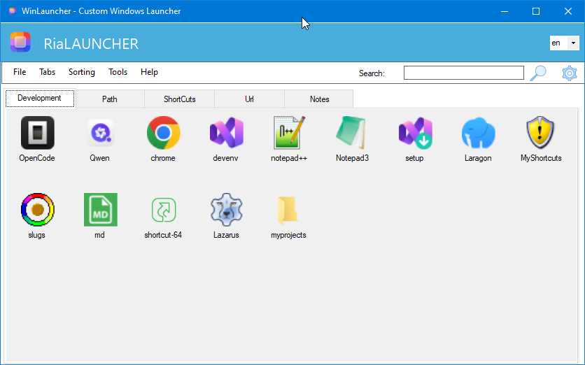
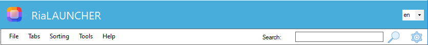
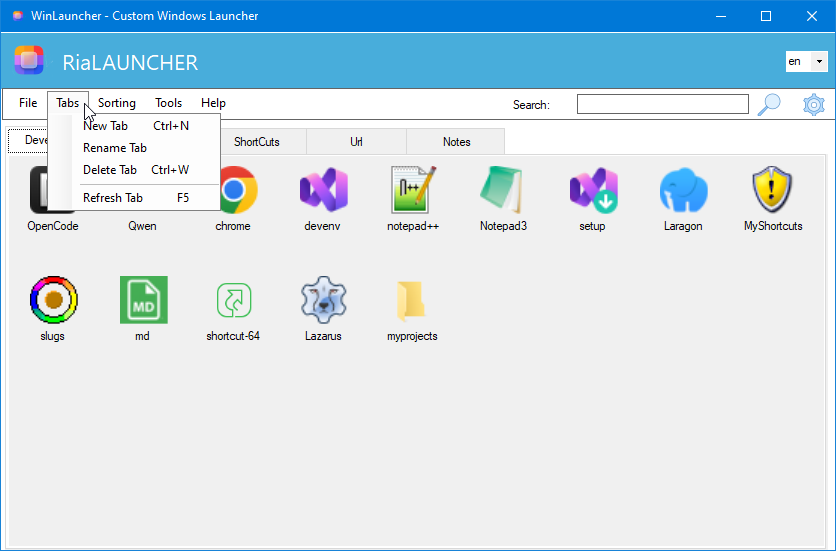
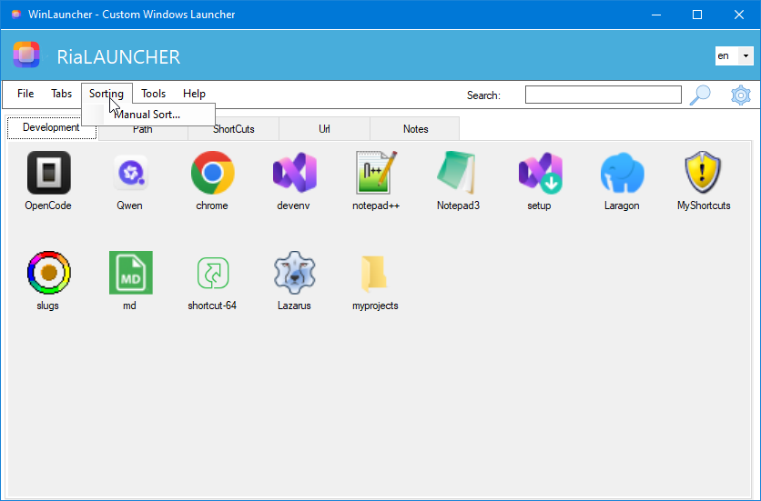
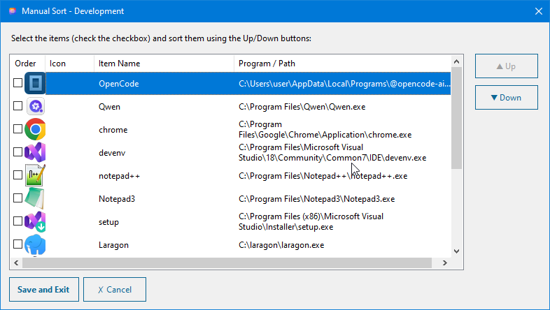
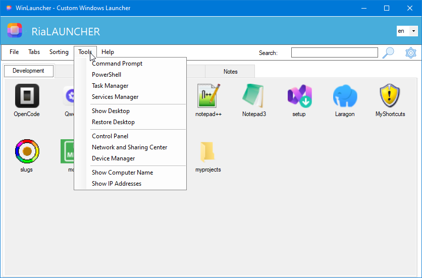
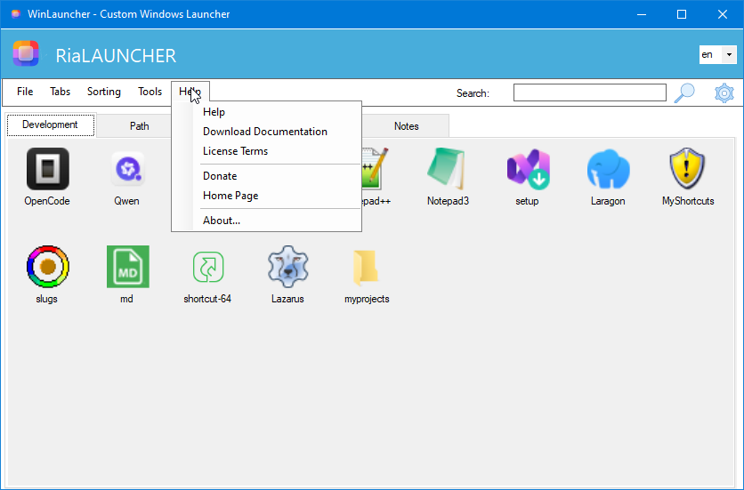

The main screen is the central workspace of RiaLauncher. It displays all your categorized application shortcuts as icons with labels, organized into tabs for easy navigation.

Figure 1: Main Screen — Application icons organized in the Development tab
Icon grid — Each icon represents a shortcut to an application, file, or folder
Search bar — Filter items by name
Menu bar — Access File, Tabs, Sorting, Tools, and Help menus
Tip: Drag and drop any file, folder, or shortcut directly onto the icon area to add it to the current tab.
2. Header & Title Bar

Figure 2: Header area with application title, language selector, and menu bar
The header section contains:
Element
Description
Application Title
"RiaLAUNCHER" branding with logo
Language Selector
Dropdown to switch between languages (en, tr, etc.)
Search Field
Text input to filter items by name
Search Button
Magnifying glass icon to execute search
Settings Button
Gear icon to open Settings dialog
3. Tabs Menu
The Tabs menu allows you to manage tab categories. Access it from the menu bar: Tabs.

Figure 3: Tabs Menu — New Tab, Rename Tab, Delete Tab, Refresh Tab
Menu Item
Shortcut
Description
New Tab
Ctrl+N
Create a new category tab
Rename Tab
—
Rename the currently selected tab
Delete Tab
Ctrl+W
Remove the currently selected tab
Refresh Tab
F5
Reload tab contents from the data file
4. Sorting Menu
The Sorting menu provides options to reorder items within the active tab. Access it from the menu bar: Sorting.

Figure 4: Sorting Menu — Manual Sort option
Menu Item
Description
Manual Sort...
Open the Manual Sort dialog to reorder items with Up/Down buttons
5. Manual Sort Dialog
The Manual Sort dialog lets you rearrange the order of items within a tab by selecting them and using the Up/Down buttons.

Figure 5: Manual Sort Dialog — Reorder items in the Development tab
The dialog displays a list with the following columns:
Column
Description
Checkbox
Select items to move up or down
Order
Current position number
Icon
Visual icon of the item
Item Name
Display name of the shortcut
Program / Path
Full file path of the target application
Use the Up and Down buttons on the right to reposition selected items. Click Save and Exit to apply changes, or Cancel to discard them.
6. Tools Menu
The Tools menu provides quick access to built-in Windows utilities and system tools. Access it from the menu bar: Tools.

Figure 6: Tools Menu — System utilities and information tools
Tool
Description
Command Prompt
Open Windows Command Prompt (cmd.exe)
PowerShell
Open Windows PowerShell
Task Manager
Open Windows Task Manager
Services Manager
Open Windows Services console
Show Desktop
Minimize all windows to show the desktop
Restore Desktop
Restore previously minimized windows
Control Panel
Open Windows Control Panel
Network and Sharing Center
Open Network settings
Device Manager
Open Windows Device Manager
Show Computer Name
Display and copy the computer name
Show IP Addresses
Display and copy local and external IP addresses
7. Help Menu
The Help menu provides access to documentation, licensing information, and project resources. Access it from the menu bar: Help.

Figure 7: Help Menu — Documentation, license, and project links
Menu Item
Description
Help
Open this user guide
Download Documentation
Download the latest version of the user guide
License Terms
View the software license agreement
Donate
Support the project with a donation
Home Page
Open the project's GitHub page
About...
View application version and copyright information
8. Settings Dialog
The Settings dialog allows you to configure launch behavior, display preferences, language, and window behavior. Open it by clicking the gear icon in the header or via the menu.